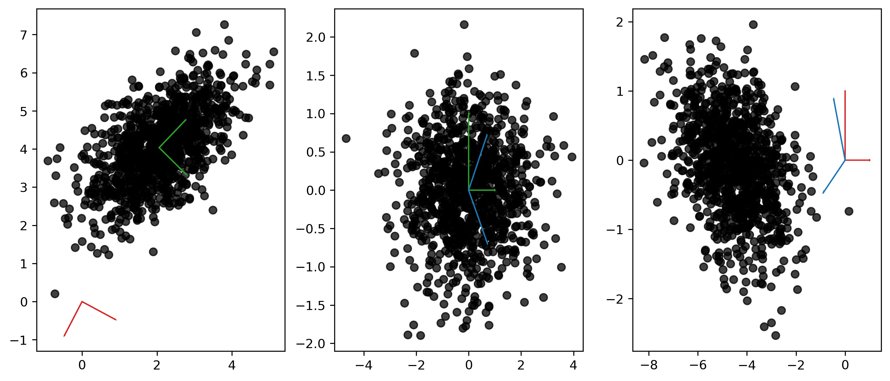
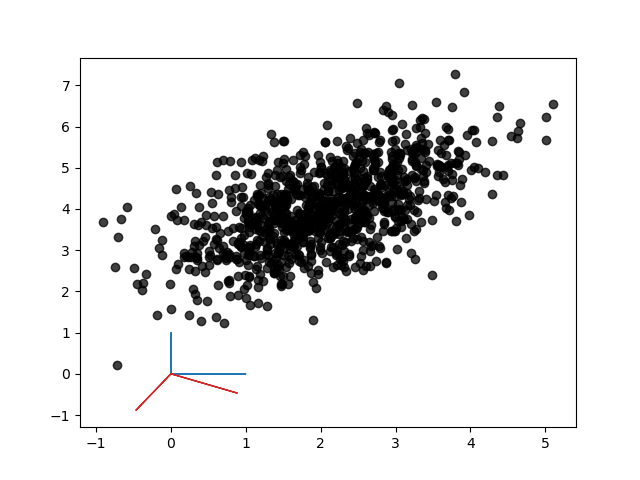

On The Importance of Centering in PCA
Fri, 09 Sep 2022
Computer Science, Data Science, Machine Learning, Statistics
The previous post presents methods for efficiently performing principal component analysis (PCA) on certain rectangular sparse matrices. Since routines for performing the singular value decomposition (SVD) on sparse matrices are readily available (e.g.
svds and
TruncatedSVD), it is reasonable to investigate the influence centering has on the resulting transformation.
Consider a matrix \(\mathbf{A}\), where the rows of \(\mathbf{A}\) are drawn from a bi-variate Gaussian Distribution \(N(\mathbf{\mu}, \mathbf{\Sigma})\). Specifically, assume that \(\mathbf{\mu} = (2, 4)^T\), \(\mathbf{\Sigma_{00}} = \mathbf{\Sigma_{11}} = 1\), and \(\mathbf{\Sigma_{01}} = \mathbf{\Sigma_{10}} = 0.6\). The impact of centering on the resulting projection is explored in the following three scatter charts. The three plots respectively show the original data with the two sets of computed basis vectors, the data projected onto the principal axis obtained with centering, and lastly the projected data without centering.

Figure 1: Projection of Bi-Variate Gaussian Distribution
Unlike the green (centered) axes, the red (uncentered) axes do not accurately represent the directions of maximum variance within the point cloud. The first component points in the direction of the distribution mean (although it is negated due to sign-indeterminacy), while the second appears to be a slightly rotated version of the true second component. The middle plot finds the data properly aligned on the principal axes. Finally, the rightmost plot shows that the uncentered axes do not capture the covariance in the data like the centered transformation. The entire point mass remains removed from the origin and the correlation between the variables persists.
In the uncentered case, the entire operation is equivalent to a 2D rotation. With this simple example, one can even solve for the theta value that produces a projection matrix that is identical to the right singular vectors from the uncentered SVD.

Figure 2: Uncentered Rotation of Bi-Variate Gaussian Distribution
The above animation shows the transformed points being rotated into place using the uncentered transformation. In this case, the rotation is about 118° and results in the points having a downward trend on the new axes, although this can vary due to sign-indeterminacy.